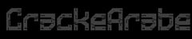

الأردبي باللغة العربية يدعى بسطح المكتب البعيد إذا ماهو ؟ الأردبي أو سطح المكتب البعيد هو جهاز متصل بالأنترنت في بلد ما ... مثل ( الهند / أمريكا / روسيا / اليابان ) والكثير من الدول الأخرى ... بماذا يفيدني الأردبي ؟ كما قلت سابقا الأردبي هو جهاز بعيد متصل بالأنترنت يمكنك الدخول إليه من هاتفك النقال أو من حاسوبك عبر تطبيق ( remote desktop client) يستعمل الكراكر الأردبي لعدة اسباب منها : وضعه المادي لا يسمح له بشراء حاسوب / خوفه على حاسوبه الأساسي من الفيروسات والهجمات إلخ حيث أن أغلب البرامج و الأدوات التي تستعمل فالكراك تكون ملغمة بفيروسات تتسبب في إتلاف حاسوبك الشخصي ويكون الأردبي الحل الأمثل حيث اذا دخل اي فيروس من البرامج والأدوات الملغمة سوف يصيب الأردبي دون إحداث أي ضرر لحاسبك الشخصي.
البروكسي ( proxy ) ماهو البروكسي ؟ البروكسي هو رقم تسلسلي موجود على كل الأجهزة مثل ( الهاتف - التابلت - الكمبيوتر - الحاسب الشخصي وفي كل الأجهزة الذكية. مثلا : 37.187.133.177:56215 للبروكسي أنواع كثيرة منها http / socks4 / socks5 تكون البروكسيات في ملفات مثل التي نشرتها أعلاه وتختلف البروكسيات المجانية عن البروكسيات المدفوعة حيث المدفوعة تكون أسرع وأحسن وأفضل من المجانية. حسنا ... لكن ما فائدة البروكسيات في الكراك ؟ لكل جهاز بروكسي واحد يدعى بالـ ip عند تجربة الدخول إلى حساب ما وتخطئ عدة مرات ستعرف الشركة أنك تحاول الدخول بنفس الأيبي فتقوم بحظرك. لذا تستعمل البروكسيات التي غالبا تكون فوق 100 حتى تفحص بدون حظر وعند حظر أحدهم ستقوم الأداة بتشغيل واحد أخر اوتوماتيكيا. توجد مواقع لا تحظر البروكسي الخاص بك مثل سبوتفاي - Spotify حيث يمكنك العمل بأيبي واحد بدون حظر وهذا عبر كونفيجات و تشيكرات Proxyless التي سأقوم بشرحها في المرة القادمة.